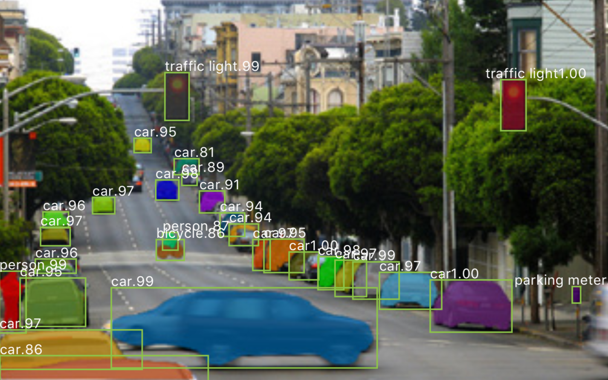

I used OpenCV to create a real-time object detection program that places bounding boxes and a mask on objects identified.
Mask R-CNN is a simple framework designed for object instance segmentation (being able to classify multiple objects in an image) and adds a mask for each object classified.
Mask R-CNN framework for object segmentation
Mask-RCNN Output = Class label, Bounding Box, and Mask
Mask R-CNN branches off of the existing framework, Faster R-CNN and is simple and flexible to train. In both frameworks, object classification and bounding box regression are performed.
So what's the difference?
Mask R-CNN adds a segmentation mask for every object classified that has a bounding box. These masks are predicted independently from the classification and box calculations.
Images are resized to 800 px and the framework was trained on 8 GPUs with a learning rate of 0.02, a weight decay of 0.0001, and a momentum of 0.9.
Read the full research paper here.